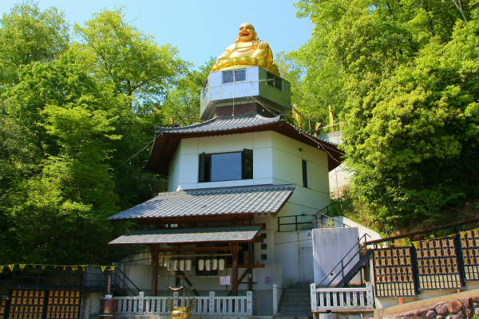
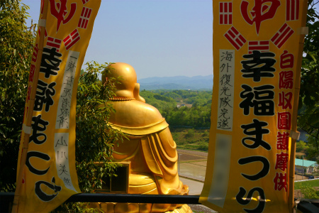

玉皇山弥勒寺/兵庫県
宝塚市の北に位置する兵庫県三田市。
急激な都市化が進んでいるが市街を一歩離れればのどかな山間の里だ。
そんな三田の郊外に怪しい寺があるとのタレコミをいただいたので行ってみた。
場所は三田の市街地から北東に数キロ。
天気も良かったので駅前でママチャリを借りてお気軽サイクリングを試みるもこれが大誤算！
行けども行けども終わらない猛烈な坂道が待ち受けていた。いつしか気温も上昇し、コンディションも最悪。
泣きながら坂道を登っている時、心の中では「将来、俺が田中角栄になったら絶対この道をブルでまっ平らに慣らして八郎潟みたいにしてやるけんね！」などと勝手に日本列島改造論をぶち上げたりして三田の方々にしてみれば迷惑千万な話だが、いかんせん私の脳内での妄言なのでご勘弁いただきたい。つかそれほど凄い坂だったんですっ！
で、何とか坂道を乗り越え呆然とチャリを漕いでいると件の寺が姿を現した。

おお、金色に輝く大仏サマがお出迎え！
んん？
目を凝らすと山の中のあちこちに大仏が潜んでいるではないか！
何でこんなに大仏さんがいるのだろう？
疲労で頭と目がぶっ壊れちゃったか？俺。
寺の名前は玉皇山弥勒寺。
後に判明するが何とも不思議な新宗教のお寺だったのだ。
で、最初の大仏さんにご挨拶。見事に金ぴかで、眩しいほど。

布袋さんのようなこの大仏は中国の弥勒菩薩である。
大仏さんの下には台湾の道教寺院でよく見る神様が鎮座している。
5体の財神の下にあるのは媽祖と農神の像。
道教系の民間信仰ではどちらも大人気の神様で、台湾には巨大媽祖や巨大農神もあるほど篤く敬われている。
呆気にとられていると信者らしきオジサンが来て色々と説明してくれた。
いわく
この教団は元々台湾で始まったのだが、神戸に来てその後十数年ほど前にこの地に寺を開いたのだとか。
道教のお寺ではなく、全ての宗教を包括した宗教なのだとか。
後半はサッパリ判らないので、はあ、はあ、と頷いていたが要点としてはこの山中には7体の大仏がいるという。
傍らに案内図があったが、肝心の大仏さんの位置が描かれていない。恐らく案内図より後に建立されたのだろう。
それにしてもかなりてんこ盛りの御様子。これは心して向かわねばなるまい。早くも足はガクガクなんですけどね。

案内図にはこの寺の概要も書かれている。いわく
当寺は生老病死の問題を解決します。三宝を得さえすれば天国に行く事ができます。
「地獄に絶対に行かない」それを導く世界で唯一のお寺です。
とか。
私にとってはココが充分天国だと思うんですが。チャリでさえ来なければ。
それでは気を取り直して早速大仏巡りに向かうぞ。レッツ天国！
素敵なノボリが続くのだが…
夙世の横死霊団救済って…
前世で不慮の死を遂げた霊を救う、などという複雑怪奇な祈願など初めて見たぞ。
勇んで出発したものの、疲れで中々足が進まない。
とりあえず信徒会館っぽいところがあるので挨拶がてら少し休憩していくことに。
会館の中には売店があり、机と椅子が並んでいる。もしかしたら食堂のようなところだったのかも知れない。
冷たい飲み物を飲みながら、壁にびっしり書き込まれたこの教団の歴史や教義を眺めていた。
大阪湾がパワーで埋め尽くされたりといった壮大すぎる叙事詩で、まるで全体像が掴めないので傍らにいたお寺の人に色々と説明してもらった。
いわくこの教団は中国で五千年間継承されてきた天道というものを信仰しているのだという。
かつては一子相伝の秘法だったようだが、19世紀末に人々に広まったとか。
その後台湾に拠点を移し、戦後神戸に布教の拠点を築いたのだそうな。
その後平成元年に現在の地に総本山を開き、境内を整備している。
先ほど見た大仏さんの下にあった祭壇を見るかぎり道教系の新興宗教かと思ったが、どうやらそういうわけでもなさそう。
基本仏教ベースに様々な宗教がごちゃ混ぜになってその上にこの教団独自の教えやスタイルが構築されている、そんな印象を受けた。
是非これ持ってってねー、と渡されたのが教団パンフと2リットルのペットボトル。
何でも加賀の方で採れるありがた〜い御神水だとか。あの〜カゴが超小さいママチャリに乗ってきたんですけどー。
さらに護摩木まで貰ってしまって…どうしよう。
大祭ではこの護摩を焚いたりもするようで。
すっかり体力もチャージされたのでいざ大仏巡りに。
ブロンズの四天王に感心し、
何のことかサッパリ判らないお堂に悩み、
意味不明の文字が書かれた石の群れに戦慄していると…
出ました！
ボスキャラ大仏！

大きさも去ることながら下の台座部分に目が釘付け。
何だ、このカッコイイ建物は。
斜面に建てられた建物は三階建てに見えるが、一番下の部分はコンクリートの基礎部。
その上に八角形の建物があり、その上にこれまた八角形の小部屋があり、さらにその上に大仏さんが鎮座している、という按配。
意味ありげな八卦の図が貼られていた。
八角形の建物の中に入ってみる。
中には阿弥陀サマと2体の観音サマの姿が。
壁は奉納された弥勒サマのプレートがはりめぐらされていた。
で、注目の大仏直下の八角の小部屋。
なんと一旦外に出て専用の階段でアプローチするのだ。
この部分だけ外壁が金属板で仕上げてあり、何ともSFっぽい感じで凄くイイ。階段もタラップっぽいし、宇宙船をイメージしているのかも。
大仏さんの背中にはバッチリ四角い窓がついていて、それがまた普通の家庭用のサッシ窓なところが素晴らしく素敵だ。
タラップを上り、ステンレスの扉を開けると…
おおお、いきなりＦＲＰ製の大仏さんの裏側が丸見えじゃないですか！
ネガポジ逆転した大仏。こうしてみると思いのほか耳が大きいんだなあ。
薄い素材なので所々鉄骨で補強してある。腹の辺りにブッスリ鉄骨が突き刺さっているのがやや痛々しい…。
所々赤くなっているのは太陽光が透過している部分。
つまりその部分は薄くなっている部分ということになろう。
そして床には…
…やはりＦＲＰとはいえ雨漏りするんですかねー。バケツが並んでました。
ちなみに建立は平成18年。
そんなこんなで大仏さんを上から下から前から後ろから外から中からじっくり堪能させてもらいましたよ。ご馳走様でした。
大仏さんの眼前には有馬富士という美しい山が広がる。

でもその後ろには海外復光隊完遂とか一族枉死者救済とか書かれたノボリが…
あと、地球延命と書かれた布が延々と続いたり。
で、お次は前教祖の廟。
台湾スタイルのお墓であった。
こちらはその弟子の霊の拠り所とか。チョットこの辺になるとマニアックすぎてついていけませんでした…。

道はまだまだ続く。緩やかに山の上へ上へと導かれる。
大量のお地蔵さんの群れ。そういえばこんなに歩いたのにまだ大仏さん2つしか見てないや。
しばらくすると馬に乗った関羽の像が現れる。
いわゆる関帝廟だ。
中央には関羽の像が鎮座し、その横には…
大量のミニチュア布袋。
さらに先には見晴らしのよい広場のような場所がある。
どうやらココがこの寺のヘソ、というか、いわゆるパワースポット（うわ〜，言っちゃったよ俺）的な場所のようだ。
で、こちらにも祖師廟という台湾風のお墓があり、その背後に記念碑のようなものが幾つか並んでいる。
さらに擁壁かと思っていた白い壁に近づいてみると…
うへえ。
ぜーんぶ大理石のブロックで、一個一個に全部謎の文言が書き込まれていた。
泉珠暦発動の碑、十三聖院団結、三期収圓、次代元創…
意味が全く判らなかったことは誠に残念であるがスケールの大きさだけは何となく感じられましたよ。

一部崩れちゃってたりするのはご愛嬌、ということで。
で、一番奥に鎮座するラウムの碑。
先ほどの八卦の図↓にもあったのだが
「中」の字に点々を打った文字をこの教団では「ラウム」と呼んでいて、特別視している。
これは創造神の名なのだそうな。
つまり天道という教えを戴くこの教団のシンボルといってよい存在なのだ。多分。
周辺にはこれまた意味不明ながらも妙にスケールの大きさだけを感じさせるポールが林立している。
「絶対的至上の勅命今大元環無」何か判らないけど迫力だけはビンビン感じる、でしょ？
気が付けばこの謎の文言にすっかり魅了されちゃった私。
当初はお気楽な大仏巡りだったはずなのに、怒涛のコトバ責めに尻子玉を抜かれちゃったみたい。
というわけで大仏さんの存在もどこへやら。言葉による信仰の極北地帯に痺れまくり、の後半に続きます。
玉皇山弥勒寺その2へ
珍寺大道場 HOME